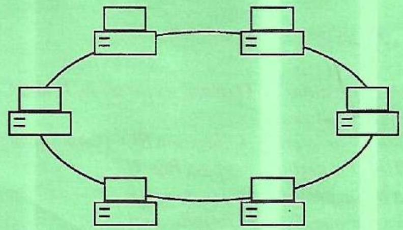
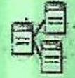

Instructions to Candidates
- You should have the following for this examination:
- Answer booklet;
- Scientific calculator/mathematical tables.
- This paper consists of THREE sections; $\boldsymbol{A}, \boldsymbol{B}$ and $\boldsymbol{C}$.
- Answer FOUR questions from section $A$, question SIX and any ONE other question from section $B$ and any THREE questions from section $C$.
- Maximum marks for each part of a question are as indicated.
- Candidates should answer the questions in English.
Question 1
(a) Explain two uses of Uninterruptible Power Supply (UPS) in a computer system.
(b) Some organisations prefer to use mainframe computers as network servers. Outline three reasons that may account for this preference.
(c) State the function of each of the following features of a word processor:
(i) Word-wrap;
(ii) Autocomplete;
(iii) Alignment.
Answer
This question tests understanding of UPS, mainframe computers, and word processor features.
(a) Uses of Uninterruptible Power Supply (UPS):
- Providing backup power during power outages to prevent data loss and system downtime.
- Protecting computer systems from voltage fluctuations, surges, and spikes.
(b) Reasons for preferring mainframe computers as network servers:
- High reliability and availability
- Scalability to handle large workloads
- Advanced security features
- Centralized management and control
(c) Function of word processor features:
- (i) Word-wrap: Automatically moves text to the next line when it reaches the end of the current line.
- (ii) Autocomplete: Suggests and completes words or phrases as the user types.
- (iii) Alignment: Positions text on a page (e.g., left, right, center, justified).
Question 2
(a) Outline three functions of a network operating system.
(b) Sawat college has installed tailor-made software for use in the management of its stores inventory. Highlight three benefits that the college may derive from using this software.
(c) Explain each of the following features of a desktop publishing software:
(i) control pallete;
(ii) pasteboard.
Answer
This question covers network operating systems, tailor-made software, and desktop publishing features.
(a) Functions of a network operating system:
- Managing network resources (e.g., file sharing, printer sharing)
- Providing security and access control
- Facilitating communication between devices
- Managing user accounts and permissions
(b) Benefits of tailor-made software for stores inventory management:
- Improved efficiency and accuracy in inventory tracking
- Reduced costs associated with inventory management
- Better decision-making based on real-time data
- Enhanced security and control over inventory
(c) Features of desktop publishing software:
- (i) Control Palette: A panel that provides access to various formatting and editing options for selected objects.
- (ii) Pasteboard: A workspace outside the printable area where objects can be stored temporarily.
Question 3
(a) Figure 1 shows a diagram of a Local Area Network.
(i) Identify the network topology.
(ii) State three challenges associated with the type of network topology in(i)
(b) Betty is in the process of creating a database. Explain the circumstance under which she may use each of the following field properties:
(i) default value;
(ii) input mask.
(c) State the difference between sign in and sign up in relation to the internet.
Answer
This question covers network topologies, database field properties, and internet concepts.
(a) Local Area Network:
- (i) Network Topology: Bus Topology
- (ii) Challenges associated with Bus Topology:
- Difficult to troubleshoot
- Single point of failure
- Limited scalability
(b) Database field properties:
- (i) Default Value: Used to automatically enter a specific value into a field when a new record is created.
- (ii) Input Mask: Used to specify the format of data that can be entered into a field.
(c) Difference between sign in and sign up:
- Sign In: The process of accessing an existing account by providing credentials (e.g., username and password).
- Sign Up: The process of creating a new account by providing personal information and choosing a username and password.
Question 4
(a) Oliver has been experiencing eye strain due to prolonged use of his laptop. State four measures that he may have taken to prevent the eye strain.
(b) Table 1 shows a spreadsheet with details of items in a shop.
| A | B | C | D | |
|---|---|---|---|---|
| 1 | Item | Quantity | Unit Cost | Total Cost |
| 2 | Cooking fat | 48 | 160 | |
| 3 | Milk | 108 | 55 | |
| 4 | Bread | 270 | 60 | |
| 5 |
Using cell addresses only, write the appropriate expressions to determine each of the following.
(i) total cost for bread.
(ii) lowest quantity;
(iii) grand total cost for all items.
Answer
This question covers eye strain prevention and spreadsheet expressions.
(a) Measures to prevent eye strain:
- Adjusting screen brightness and contrast
- Positioning the screen at an appropriate distance and angle
- Taking regular breaks to rest the eyes
- Using appropriate eyewear or screen filters
(b) Spreadsheet expressions:
- (i) Total cost for bread: =B4*C4
- (ii) Lowest quantity: =MIN(B2:B4)
- (iii) Grand total cost for all items: =SUM(D2:D4)
Question 5
(a) Explain each of the following terms in relation to computer security:
(i) firewall;
(ii) encryption.
(b) Distinguish between slide show view and notes page view as used in presentation software.
(c) State the function of each of the following icons in a database application.
(i)
(ii)
Answer
This question covers computer security, presentation software views, and database application icons.
(a) Computer security terms:
- (i) Firewall: A security system that monitors and controls incoming and outgoing network traffic based on predetermined security rules.
- (ii) Encryption: The process of converting data into an unreadable format to protect it from unauthorized access.
(b) Slide show view vs. notes page view:
- Slide Show View: Displays the presentation slides in full-screen mode for presentation to an audience.
- Notes Page View: Displays each slide with associated notes for the presenter.
(c) Function of database application icons:
- (i) : Create Table
- (ii) : Create Query
SECTION B: COMMUNICATION SKILLS
Question 6 (Compulsory)
(a) (i) During the process of communication, a receiver's comprehension of the message is influenced by a number of factors. State three such factors.
(ii) Outline three reasons that make feedback a key component in the process of communication.
(b) Highlight three effects of poor employer-employee communication on an organisation.
(c) State three qualities of a good summary.
(d) You have been appointed as a workshop supervisor in a newly established engineering firm. The management has requested you to design a form to be used by the workshop staff to report on breakdown of machinery. Design the form.
Answer
This question covers factors influencing communication, feedback, employer-employee communication, qualities of a summary, and form design.
(a) Factors influencing comprehension:
- Receiver's knowledge and experience
- Receiver's attitude and biases
- Clarity and organization of the message
- Communication channel used
- Environmental distractions
(b) Effects of poor employer-employee communication:
- Decreased employee morale and productivity
- Increased conflicts and misunderstandings
- Reduced innovation and creativity
- Poor customer service
(c) Qualities of a good summary:
- Concise and accurate
- Comprehensive and complete
- Objective and unbiased
- Clear and well-organized
(d) Form design:
Machinery Breakdown Report Form
- Date and Time of Breakdown
- Machine Name and ID
- Description of Breakdown
- Possible Cause of Breakdown
- Action Taken
- Reported By:
- Signature:
Question 7
(a) In relation to telephone etiquette, highlight three mistakes that a caller in an organisation may make.
(b) State three measures that the management of an organisation may take to enhance customer care.
(c) Outline four reasons that may make it necessary for a manager in an organisation to write a memorandum to the employees.
Answer
This question covers telephone etiquette, customer care, and memorandum writing.
(a) Telephone etiquette mistakes:
- Speaking too quickly or unclearly
- Using slang or jargon
- Failing to identify themselves or their organization
- Being rude or unprofessional
(b) Measures to enhance customer care:
- Providing prompt and courteous service
- Actively listening to customer needs and concerns
- Resolving customer complaints efficiently
- Training employees on customer service skills
(c) Reasons for writing a memorandum:
- To communicate policy changes or updates
- To announce important events or meetings
- To provide instructions or guidelines
- To request information or feedback
Question 8
(a) Explain two advantages of diagonal communication.
(b) Outline two benefits that an interviewer may derive from asking open-ended questions during a recruitment interview.
(c) State four criteria that may be used to select participants of a meeting in a organisation.
Answer
This question covers diagonal communication, open-ended questions, and meeting participant selection.
(a) Advantages of diagonal communication:
- Improved information flow and coordination
- Enhanced creativity and problem-solving
(b) Benefits of open-ended questions:
- Gaining deeper insights into the candidate's skills and experience
- Assessing the candidate's communication and critical thinking abilities
(c) Criteria for selecting meeting participants:
- Expertise and knowledge
- Relevance to the meeting agenda
- Decision-making authority
- Availability and willingness to participate
SECTION C: ENTREPRENEURSHIP EDUCATION
Question 9
(a) Outline two differences between a self-employed person and a salaried employed person.
(b) State two circumstances under which an entrepreneur may prefer to use a shorter distribution channel when selling a product.
(c) Explain two ways in which the government may be a source of a new product idea.
Answer
This question covers self-employment vs. salaried employment, distribution channels, and government as a source of product ideas.
(a) Differences between self-employed and salaried employed:
- Self-employed: Works for themselves, responsible for their own income and expenses. Salaried employed: Works for an employer, receives a fixed salary.
- Self-employed: Greater autonomy and flexibility. Salaried employed: Less autonomy, follows employer's instructions.
(b) Circumstances for shorter distribution channel:
- When the product is perishable or requires special handling
- When the entrepreneur wants to maintain close control over the customer experience
(c) Government as a source of product ideas:
- Identifying unmet needs in the public sector
- Licensing government-developed technologies
Question 10
(a) Explain each of the following terms as used in Entrepreneurship.
(i) home-based business;
(ii) marketing.
(b) Highlight three limitations of budgeting in an organisation.
(c) Some people are reluctant to engage in entrepreneurship due to myths associated with it. State three such myths.
Answer
This question covers entrepreneurship terms, budgeting limitations, and entrepreneurship myths.
(a) Entrepreneurship terms:
- (i) Home-based business: A business that is operated from the owner's residence.
- (ii) Marketing: The process of creating, communicating, and delivering value to customers.
(b) Limitations of budgeting:
- Inaccuracy and uncertainty
- Time-consuming and costly
- Lack of flexibility
- Resistance from employees
(c) Myths about entrepreneurship:
- Entrepreneurs are born, not made
- Entrepreneurship is only for the young
- Entrepreneurship is all about luck
Question 11
(a) Outline three disadvantages of brainstorming as a method of business idea generation.
(b) Outline four roles of cooperative societies in the economic development of a country.
(c) State three challenges that an entrepreneur may face when writing a business plan.
Answer
This question covers brainstorming disadvantages, cooperative society roles, and business plan challenges.
(a) Disadvantages of brainstorming:
- Time-consuming and inefficient
- Domination by certain individuals
- Lack of focus and structure
- Groupthink and conformity
(b) Roles of cooperative societies:
- Promoting economic empowerment
- Providing access to credit and financial services
- Facilitating marketing and distribution
- Enhancing social cohesion and community development
(c) Challenges in writing a business plan:
- Lack of experience and knowledge
- Difficulty in forecasting future trends
- Limited access to data and information
- Time constraints and resource limitations
Question 12
(a) Outline three ways in which the political environment of a country may hinder the growth of entrepreneurship.
(b) State three strategies that the management of an enterprise may adopt to foster an enterprise may derive from engaging in internet marketing.
(c) Highlight four benefits that a business enterprise may derive from engaging in internet marketing.
Answer
This question covers political environment, enterprise strategies, and internet marketing benefits.
(a) Political environment hindering entrepreneurship:
- Political instability and corruption
- Unfavorable government policies and regulations
- Lack of protection for property rights
(b) Strategies to foster an enterprise:
- Promoting innovation and creativity
- Encouraging risk-taking and experimentation
- Providing resources and support for new ventures
(c) Benefits of internet marketing:
- Increased brand awareness and visibility
- Wider reach and access to global markets
- Reduced marketing costs
- Improved customer engagement and loyalty